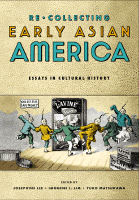

<body bgcolor="#FFFFFF" text="#000000" link="#0000FF" vlink="#CC0000" alink="#CC0000"><center><hr width="350" size="1" align="center" noshade>An interdisciplinary reexamination of a fragmented history<hr width="350" size="1" align="center" noshade><p><a href="https://cdcshoppingcart.uchicago.edu/Cart/ChicagoBook.aspx?ISBN=9781566399630&&PRESS=temple" target="_top">Buy this book!</a> | <a href="https://cdcshoppingcart.uchicago.edu/Cart/Cart.aspx?PRESS=temple" target="_top">View Cart</a> | <a href="https://cdcshoppingcart.uchicago.edu/Cart/Cart.aspx?PRESS=temple" target="_top">Check Out</a></p><p></p></center><!--none//--><h1>Re/collecting Early Asian America</h1>
<H2>Essays in Cultural History</H2>
<h3>edited by Josephine Lee, Imogene L. Lim and Yuko Matsukawa</h3>
<P>cloth 1-56639-963-7 $74.50, Aug 02, <FONT COLOR=#990033>Out of Stock Unavailable</FONT>
<br>paper 1-56639-964-5 $32.95, Aug 02, <FONT COLOR=#990033>Available</FONT>
<br>Electronic Book 1-43990-120-1 $32.95 <FONT COLOR=#990033>Out of Stock Unavailable</FONT>
<BR> 384 pp
7x10
5&nbsp;tables 1&nbsp;figure 29&nbsp;halftones
</P><h3 align="center"><P>Lifetime Achievement Award from the Association of Asian American Studies Conference,
2016</font></P>
</H3>
<BLOCKQUOTE><I>"The editors have assembled an engaging collection of essays which together dramatize the range and depth of 'early' Asian American history. The essays in this volume show us the extraordinary diversity and texture of Asian American culture before the demographic turn of the late 1960s. Accessible to the general reader, this new scholarship is eminently useful for the classroom."</I>
<br>&#151<b>Robert G. Lee</b>, Associate Professor of American Civilization, Brown University, and author of <I><a href="1375_reg.html" target="_top">Orientals: Asian Americans in Popular Culture</a></I> (Temple)<I></I></BLOCKQUOTE>
<p>As a book about cultural memory and retrieval, this collection of essays asks readers to reconsider who represents Asian America and what constitutes its history. Defining the early period as spanning the nineteenth century and the 1960s, the original essays here speak to the difficulty of recovering a past that was largely unrecorded as well as understanding the varied experiences of peoples of Asian descent. Interdisciplinary in approach, the essays address the Asian American individuals and communities that have been omitted from "official" histories; trace the roots of persistent racial stereotypes and myths; and retrieve artistic production that raises vexed questions of what counts as "art" or as Asian American. By reconsidering the political, cultural, and material history written in the last three decades, this volume contributes to a new understanding of Asian America's past and relationship to the present.
<BR>&nbsp;<h2>Excerpt</h2><P>Excerpt available at <a href="http://www.temple.edu/tempress">www.temple.edu/tempress</a></p>
<BR>&nbsp;<h2>Reviews</h2>
<p><i>"[The book] presents us with exciting new scholarship on the period before 1960. Taken together, the volume's cogent introduction and twenty individually authored essays contribute to the field of Asian American studies by reaffirming the worth of studying the past, not only for what it can tell us about the present but also for its own rich, complicated, and intellectually rewarding reasons....As the essays in this volume demonstrate, [this] is worth studying. </i>Re/Collecting Early Asian America<i> thus represents a milestone in the development of a maturing field."</i>
<br>&#151<b><i>The Journal of American Ethnic History</i></b>
<p><i>"Defining 'early' as the period beginning in the 1800s with the initial migration of Asians to the Americas and continuing until the dramatic policy changes in the mid-1960s, this collection is organized around four themes. "Locations and Relocations" examines place as constructed, with several essays taking Chinatowns, real or imagined, as their subjects. "Crossings" complicates the popular notion of migration as a movement in one direction, clearly defined in time and space. "Objects" addresses issues of racial stereotype. "Recollections" celebrates early Asian American artists while grappling with questions about what counts as art and who qualifies as Asian American."</i>
<br>&#151<b><i>American Literature</i></b>
<p><i>"This well-documented compilation of 20 essays, mostly by established scholars in their respective fields, discusses the history, literature, memories, and anthropology of Asians in the Americas....The editors have done a commendable job of selecting a well-balanced, compelling, and fascinating set of essays that are informative, easy to read, and scholarly."</i>
<br>&#151<b><i>Library Journal</i></b>
<p><i>"[F]ascinating...the authors manage to provide new insight that illuminates the tension between the marginalization and disenfranchisement of early Asian Americans and their efforts to challenge institutionalized racism while creating a vibrant cultural space."</i>
<br>&#151<b><i>Asian Affairs</i></b>
<p><i>"This eclectic volume of quality scholarship mirrors the current state of Asian American studies, capturing dynamic and revisionist attempts to record an inclusive history that recognizes difference while exploring commonalities."</i>
<br>&#151<b><i>Journal of the West</i></b>
<p><i>"...the interdisciplinary and cross-disciplinary engagements it seeks to make with an 'early Asian America' offer useful correctives, insightful analysis, and food for thought, not only for Asian American studies scholars but also for scholars concerned with 'history' and the processes that connect, imagine, tell, and recollect the past to, and within, the present."</i>
<br>&#151<b><i>The Journal of American History</i></b>
<BR>&nbsp;<h2>Contents</h2><P>
<p>1. Introduction &#150 Yuko Matsukawa, Josephine Lee, and Imogene L. Lim
<p><b>Part I: Locations and Relocations</b>
<br>2. Pacific Entry, Pacific Century: Chinatown and Chinese Canadian History &#150 Imogene L. Lim
<br>3. Chinese Campus and Chinatowns: Chinese Mining Settlements in the Canadian and American West &#150 Randall Rohe
<br>4. Artifacts of a Lost City: Arnold Genthe's <I>Pictures of Old Chinatown</I> and its Intertexts &#150 Ema Teng
<br>5. The Komagata Maru: Memory and Mobilization Among the South Asian Diaspora in North America &#150 Rajini Srikanth
<br>6. Community Destroyed? Assessing the Impact of the Loss of Community on Japanese Americans During World War II &#150 Lane Ryo Hirabayashi
<p><b>Part II: Crossings</b>
<br>7. From Colonial Subject to Undesirable Alien: Filipino Immigration Exclusion
and Repatriation 1920-1940 &#150 Mae M. Ngai
<br>8. The Sojourner as Astronaut: Paul Siu in Global Perspective &#150 Adam McKeown
<br>9. Between Fact and Fiction: Literary Portraits of Chinese Americans in the 1905 Anti-American Boycott &#150 Guanhua Wang
<br>10. From Exchange Visitor to Permanent Resident: Reconsidering Filipino Nurse Migration as a Post-1965 Phenomenon &#150 Catherine Ceniza Choy
<br>11. China Latina &#150 Fabiana Chiu-Rinaldi
<p><b>Part III: Objects</b>
<br>12. Exotic Explorations: Travels to Asia in Early Cinema &#150 Jeanette Roan
<br>13. Representing the Oriental in Nineteenth-Century Trade Cards &#150 Yuko Matsukawa
<br>14. Dissecting the "Devil Doctor": Stereotype and Sensationalism in Sax Rohmer's <I>Fu Manchu</I> &#150 Tina Chen
<br>15. Footprints from the Past: Passing Racial Stereotypes in the Hardy Boys &#150 Meredith Wood
<br>16. Face-ing/De-Face-ing Racism: Physiognomy as Ethnic Marker in Early Eurasian/Amerasian Women's Texts &#150 Helena Grice
<p><b>Part IV: Recollecting</b>
<br>17. Yan Phou Lee on the Asian American Frontier &#150 Amy Ling
<br>18. "A Different Mode of Speech": Yone Noguchi in Meiji America &#150 Edward Marx
<br>19. Asian American sin Progress: College Plays 1937-1955 &#150 Josephine Lee
<br>20. The Americanization of Americans: The Phenomenon of Nisei Internment Camp Theater &#150 Robert Cooperman
<br>21. Reclaiming Sui Sin Far &#150 Guy Beauregard
</P><BR>&nbsp;<H2>About the Author(s)</H2>
<table><tr><td valign="top"><img src="/tempress/authors/1427_au1.gif" height="90" width="75"></td><td width="100%" valign="middle"><p><b>Josephine Lee</b> is Associate Professor of English at the University of Minnesota and the author of <I>Performing Asian America</I> (Temple).</P></td></tr></table><P><b>Imogene Lim</b> is University-College Professor of Anthroplogy at Malaspina University.</P>
<P><b>Yuko Matsukawa</b> has taught American literature and women's studies at Rhode Island College, Tufts University, and the State University of New York at Brockport.</P>
<P>Contributors: Guy Beauregard, Tina Chen, Fabiana Chiu-Rinaldi, Catherine Ceniza Choy, Robert Cooperman, Helena Grice, Lane Ryo Hirabayshi, Amy Ling, Edward Marx, Adam McKeown, Mae M. Ngai, Jeanette Roan, Randal Rohe, Rajini Srikanth, Emma J. Teng, Guanhua Wang, Meredith Wood, and the editors.</P>
<BR><H2>Subject Categories</H2>
<p><A HREF="/tempress/asian_amer.html" TARGET="_top">Asian American Studies</a>
<BR><A HREF="/tempress/cultural.html" TARGET="_top">Cultural Studies</a>
<BR><A HREF="/tempress/literature.html" TARGET="_top">Literature and Drama</a>
</p>
<BR><h2 class="inpageheading">In the series</H2>
<P><I><a href="http://www.temple.edu/tempress/asam_history.html" onMouseOver="window.status='Click for other books in this series!'; return true;" onMouseOut="window.status=''; return true;" target="_top">Asian American History and Culture</a></i>, edited by K. Scott Wong, Linda Trinh Võ, and Cathy Schlund-Vials.
</p><p>Founded by Sucheng Chan in 1991, the <I>Asian American History and Culture</I>, series has sponsored innovative scholarship that has redefined, expanded, and advanced the field of Asian American studies while strengthening its links to related areas of scholarly inquiry and engaged critique. Like the field from which it emerged, the series remains rooted in the social sciences and humanities, encompassing multiple regions, formations, communities, and identities. Extending the vision of founding editor Sucheng Chan and emeriti editor Michael Omi and David Palumbo-Liu, series editors K. Scott Wong, Linda Trinh Võ, and Cathy Schlund-Vials continue to develop a foundational collection that embodies a range of theoretical and methodological approaches to Asian American studies.</p>
<p align="center"><a href="https://cdcshoppingcart.uchicago.edu/Cart/ChicagoBook.aspx?ISBN=9781566399630&&PRESS=temple" target="_top">Buy this book!</a> | <a href="https://cdcshoppingcart.uchicago.edu/Cart/Cart.aspx?PRESS=temple" target="_top">View Cart</a> | <a href="https://cdcshoppingcart.uchicago.edu/Cart/Cart.aspx?PRESS=temple" target="_top">Check Out</a></p><p><font face="Arial" size="1"><a href="copyright.html" onMouseOver="window.status='Web Copyright Policy';return true;" onMouseOut="window.status=''" title="Web Copyright Policy">&copy;</a> 2016 <a href="http://www.temple.edu" target="new" onMouseOver="window.status='Link to Temple University home page';return true;" onMouseOut="window.status=''" title="Link to Temple University home page">Temple University</a>. All Rights Reserved. http://www.temple.edu/tempress/titles/1427_reg.html</font></p>